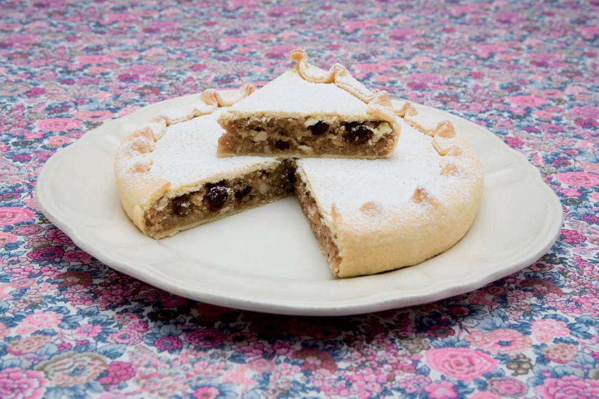

SPONGATA
DOLCI

- Descrizione
- È una chicca della cucina reggiana che non manca mai nei cenoni di Natale e di San Silvestro. Il suo nome sembra derivi da “sponga” cioè spugna, a causa dell’aspetto della superficie pizzicata che la fa sembrare, appunto, una spugna. È una torta con una base di pasta simile alla pasta brisée, riempita con marmellata di mele e pere, frutta candita, pinoli e mandorle, e ricoperta da un secondo strato di sfoglia. Questo strato viene bucherellato fittamente per facilitarne la cottura in forno e infine modellato con uno stampo di legno. Questo dolce, per il quale è stata richiesta la denominazione di origine protetta, nasce a Brescello nella bassa reggiana, ma si trova facilmente nelle migliori pasticcerie di tutta la provincia.
- Ingredienti
- Ripieno
250g di pane biscotto tritato
250g di gherigli di noce
120g di pinoli
100g di uvetta
110g di cedro candito
7g di cannella in polvere
4g di chiodi di garofano
4g di noce moscata
100g di mandorle tostate
300g di marmellata
1kg di miele
spezie
Pasta
500g di fior di farina
250g di burro
250g di miele o zucchero
un tuorlo
un po' di lievito
vino bianco qb. per impastare
Preparazione
In un pentolino far liquefare il miele aggiungendo un bicchiere d’acqua e lasciandolo bollire un po'. Unire tutti gli ingredienti del ripieno (tagliare a pezzettini noci, mandorle, cedro) e lasciar riposare per 15 giorni, avendo cura di dare una mescolata ogni giorno. Preparare due strati di pasta piuttosto spessa bucherellandoli con una forchetta e farcirli con il ripieno. Preriscaldare il forno e cuocere la spongata a 160° per circa mezz’ora. Per guarnire, una spolverata abbondante di zucchero a velo.
Torna alla pagina iniziale
by Bartoli Matteo